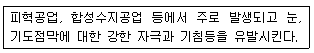
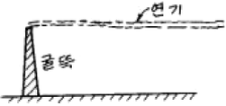
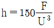
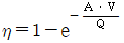
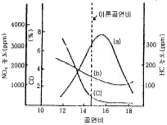
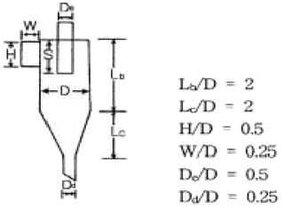
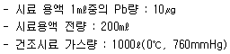
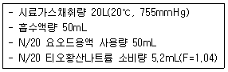

대기환경기사 (2005-03-20 기출문제)
1과목: 대기오염 개론
1. 자동차에서 배출되는 대기오염물질 중 크랭크케이스에서 blow by 가스로 배출되어 문제가 되는 것은?
- 질소산화물
- 탄화수소
- 일산화탄소
- 납
(정답률: 알수없음)

2. 역사적 대기오염사건과 그 원인이 되었던 오염물질이 잘못 짝어진 것은?
- 보팔 사건 - 메틸이소시아네이트
- 포자리카 사건 - 이산화황
- 도노라 사건 - 이산화황
- 뮤즈 계곡 사건 - 이산화황
(정답률: 알수없음)
3. 다음은 어떤 오염물질의 발생원 및 인체에 대한 영향을 설명한 것인가?

- 불화수소
- 질소산화물
- 염소
- 포름알데히드
(정답률: 알수없음)
4. 대기의 수직구조에 관한 설명으로 가장 알맞는 것은?
- 대류권의 높이는 고위도 지방보다 저위도 지방이 낮다.
- 대류권은 지상으로부터 약 20 - 30km 정도의 범위를 말한다.
- 대류권의 높이는 여름보다 겨울이 높다.
- 구름이 끼고 비가 내리는 등의 기상현상은 대류권에 국한되어 나타나는 현상이다.
(정답률: 알수없음)
5. 용융된 물질이 휘발해서 형성된 기체가 응축할 때 생기는 고체입자로서 상호 응결하며 때로는 충돌 결합하는 것으로 가장 적절한 것은?
- 훈연
- 매연
- 연무
- 검댕
(정답률: 알수없음)
6. 일반 실내 공기오염(indoor air pollution) 물질과 가장 거리가 먼 것은?
- 라돈(radon)
- 석면(asbestos)
- 포름알데히드(formaldehyde)
- 염화비닐(vinyl chloride)
(정답률: 85%)
7. 다이옥신에 대한 설명으로 틀린 것은?
- 다이옥신류는 VOC류와 POC류로 대별되며 이 성질체가 매우 다양하다.
- 증기압과 물에 대한 용해도가 낮다.
- 고온에서 완전분해 후에도 저온에서 재생성이 가능하다.
- 벤젠 등에 용해되는 지용성으로 토양 등에 흡수된다.
(정답률: 알수없음)
8. 0℃, 1기압에서 1m3의 대기시료를 채취하여 SO2를 검출한 결과 SO2가 3.5mg 검출되었다. 이를 부피/부피분율의 단위 농도로 환산한 값은?
- 약 0.6 ppm
- 약 1.2 ppm
- 약 2.9 ppm
- 약 4.2 ppm
(정답률: 63%)
9. '수용모델'에 관한 설명으로 알맞지 않는 것은?
- 지형, 지상학적 정보없이도 사용 가능하다.
- 수용체 입장에서 영향평가가 현실적으로 이루어질 수 있다.
- 현재나 과거에 일어났던 일을 추정, 미래를 위한 전략을 세울 수 있다.
- 측정자료를 적용하여 실질적 시나리오 작성이 용이하다.
(정답률: 알수없음)
10. 온위(Potential Temperature)에 관한 내용으로 알맞지 않은 것은?
- 온위는 어느 고도의 공기를 건조단열적으로 끌어내려 임의로 선정한 표준기압면까지 옮겨 놓았을 때 나타나는 기온을 말한다.
- 온위의 연직 분포로부터 대기의 안정도를 판단할 수 있다.
- 온위의 기준이 되는 고도에서의 기압은 보통 1000mb이다.
- 온위가 높을수록 공기의 밀도가 커진다.
(정답률: 60%)
11. 그림과 같이 굴뚝에서 나온 연기가 퍼져 나갈 때 이를 무슨 형태라 하는가?

- Looping
- Fumigation
- Fanning
- Trapping
(정답률: 알수없음)
12. 불안정한 조건에서 굴뚝방출 가스속도가 13m/sec, 굴뚝의 안지름이 3.6m, 가스온도가 167℃, 기온이 20℃, 풍속이 7m/sec 일 때 연기의 상승높이(유효상승고)는? (단, 불안정 조건시 연기의 상승 높이

이며 F는 부력(플럭스)을 나타낸다.)- 약 154 m
- 약 125 m
- 약 91 m
- 약 86 m
(정답률: 알수없음)
13. 체적이 100m3인 복사실의 공간에서 오존(O3)의 배출량이 분당 0.2mg인 복사기를 연속 사용하고 있다. 복사기 사용 전의 실내 오존의 농도가 0.1ppm라고 할 때 5시간 사용 후 오존농도는 몇 ppb인가? (단, 0℃, 1기압 기준, 환기는 고려하지 않음)
- 260
- 380
- 420
- 520
(정답률: 알수없음)
14. 문제 오류로 복원중입니다. 정확한 내용을 아시는 분께서는 오류신고를 통하여 내용 작성 부탁드립니다. 정답은 2번입니다.
- 25 g/sec
- 30 g/sec
- 35 g/sec
- 40 g/sec
(정답률: 알수없음)
15. 지상 20m의 풍속이 8m/sec일 때 지상 60m의 풍속은? (단, Deacon식 적용, 풍속지수 P: 0.25)
- 8.2 m/sec
- 9.3 m/sec
- 10.5 m/sec
- 12.8 m/sec
(정답률: 알수없음)
16. 다음 설명중 틀린 것은?
- 열섬 효과(Heat island effect)는 특히 직경 10㎞ 이상의 도시에서 잘 나타난다.
- 산곡풍은 낮보다는 밤에 더 세게 분다.
- 육풍은 해안에서 멀리 떨어진 내륙에서 일어나며 겨울보다는 여름철에 더 강하다.
- 해풍은 낮에 생기기 시작하여 오후 중간쯤 가장 강하며 밤에는 강하지 않다.
(정답률: 알수없음)
17. 굴뚝연기의 모양 중 원추형에 관한 설명으로 알맞는 것은?
- 대기안정도가 불안정한 조건에서 발생된다.
- 복사역전층 내에 배출원이 존재할 때 발생한다.
- 굴뚝 배출원에 의한 지표오염도가 가장 높은 plume 형태이다.
- 구름이 많이 낀 날에 주로 관찰된다.
(정답률: 55%)
18. 대기 중에 부유하는 중금속에 관한 설명으로 알맞지 않는 것은?
- 수은은 증기 또는 먼지의 형태로 대기 중에 배출되고 미량으로도 인체에 영향을 미치며 널리 알려진 것은 미나마타병이다.
- 카드뮴은 주로 산화카드뮴이나 황산카드뮴으로 존재하고 아연정련, 카드뮴축전지, 전기도금, 살충제 제조공장 등에서 발생한다.
- 납은 주로 대기중에 미세 입자로 존재하고 골수의 신경기능장해로 파킨스병을 유발하며, 방부제나 형광등 제조 공장에서 대부분이 발생된다.
- 크롬은 피혁공업, 염색공업, 시멘트제조업 등에서 발생 되며 호흡기 또는 피부를 통하여 체내로 유입된다.
(정답률: 알수없음)
19. 다음은 리차드슨수(Ri, Richardson number)에 대한 설명이다. 이 중에서 틀린 것은?
- Ri수가 '0'이면 기계적 난류만 존재한다.
- Ri수가 큰 양의 값을 가지면 대류가 지배적이어서 강한 수직운동이 일어난다.
- Ri수가 '0'에 접근하면 분산은 줄어든다.
- Ri수는 무차원수로서 근본적으로 대류난류를 기계적인 난류로 전환시키는 율을 측정한 것이다.
(정답률: 알수없음)
20. 기온역전의 분류 중 공중역전과 가장 거리가 먼 것은?
- 접지역전
- 전선역전
- 침강역전
- 난류역전
(정답률: 알수없음)
2과목: 연소공학
21. 배기장치의 송풍기에서 1,000 Sm3/min의 배기가스를 배출 하고 있다. 이 장치의 압력손실은 250mmH2O이고, 송풍기의 효율이 65%라면 이 장치를 움직이는데 소요되는 동력은 (kw)은?
- 42.84
- 52.84
- 62.84
- 72.84
(정답률: 알수없음)
22. 프로판(C3H8)과 부탄(C4H10)을 용적비 1:1 로 혼합한 가스 1Sm3 를 완전 연소할 때 발생하는 CO2의 양(Sm3)은?
- 1.5
- 2.5
- 3.5
- 4.5
(정답률: 알수없음)
23. 순수한 탄소가 완전연소해서 생기는 (CO2)max는?
- 약 12%
- 약 17%
- 약 21%
- 약 34%
(정답률: 알수없음)
24. 분자식이 CmHn인 탄화수소 1Sm3를 연소시키는데 필요한 이론 공기량(Sm3)은?
- 3.76m + 1.19n
- 3.76m + 1.24n
- 4.76m + 1.19n
- 4.76m + 1.24n
(정답률: 알수없음)
25. 석탄연소가스 중량분석치가 CO2 14%, O2 6%, N2 80%이다. 이에 대한 공기비(m)는? (단, 연료중의 N2는 무시한다.)
- 1.1
- 1.2
- 1.3
- 1.4
(정답률: 알수없음)
26. 가스 연료에 관한 설명 중 맞는 것은?
- 액화석유가스는 대부분 천연가스에서 회수하여 얻어진다.
- 천연가스인 유전가스 중 건성가스는 대부분 메탄이 주성분이다.
- 액화천연가스의 주성분은 부탄과 프로판이다.
- 석탄가스의 주요한 가연성분은 프로판 및 부탄으로서 주로 대규모 난방용 연료로 사용한다.
(정답률: 알수없음)
27. 석탄의 성질에 관한 설명으로 알맞지 않은 것은?
- 석탄을 가열하였을 때 팽창도의 대소로써 점결성(caking property)을 가늠한다.
- 점결성은 석탄에서 코크스를 생산할 때 중요한 성질이며 주로 강점결탄을 사용한다.
- 석탄내 휘발분은 매연발생의 요인이 된다.
- 석탄의 비열은 탄화도가 증가하면 높아진다.
(정답률: 알수없음)
28. 기체연료의 연소적 특성으로 알맞지 않는 것은?
- 적은 과잉공기를 사용하여도 완전연소가 가능하다.
- 저장 및 수송이 불편하며 시설비가 많이 소요된다.
- 연소효율이 높고 매연이 발생하지 않는다.
- 부하의 변동범위가 넓어 연소조절이 어렵다.
(정답률: 알수없음)
29. C, H, S의 중량(%)이 각각 85%, 13%, 2%인 중유를 공기과잉계수 1.2로 연소시킬 때 건조 배기중의 이산화황의 부피분율(%)은? (단, 황성분은 전량이 이산화황으로 전환된다고 가정)
- 약 0.1%
- 약 0.3%
- 약 0.5%
- 약 0.7%
(정답률: 알수없음)
30. CH4 1mol이 완전연소할 때의 AFR(공기mole/연료mole)은?
- 6.5
- 7.5
- 8.5
- 9.5
(정답률: 알수없음)
31. 어떤 1차 반응에서 100초 동안 반응물의 1/2이 분해되었다면 반응물의 1/10 이 남을 때까지의 시간은?
- 332 sec
- 359 sec
- 373 sec
- 396 sec
(정답률: 알수없음)
32. C 80%, H 20%인 액체 연료를 1㎏/min로 연소시킬 때 배기가스 성분이 CO2 15%, O2 5%, N2 80% 였다. 실제공급공기량(Sm3/h)은?
- 약 620
- 약 730
- 약 870
- 약 980
(정답률: 알수없음)
33. S함량 2%인 벙커 C유 100KL를 사용하는 보일러에 S함량 5%인 벙커 C유를 50% 섞어서(S함량 2%인 벙커 C유 50KL + S함량 5% 벙커 C유 50KL) 사용한다면 S의 배출량은 약 몇 % 증가하겠는가? (단, B-C유 비중 0.95 이며, 황은 전량이 배출된다. %는 무게기준)
- 45%
- 55%
- 65%
- 75%
(정답률: 알수없음)
34. 석유의 물성치에 관한 설명으로 틀린 것은?
- 중질유는 방향족계 화합물을 30% 이상 함유한다.
- 미국석유협회에서 정한 API도는 비중에 반비례한다.
- 석유의 비중이 커지면 인화점 및 착화점이 낮아진다.
- 석유의 동점도가 감소하면 유동성이 좋아진다.
(정답률: 알수없음)
35. 액체연료의 연소장치 중 회전식 버너에 관한 설명으로 틀린 것은?
- 3,000 - 10,000rpm으로 회전하는 컵모양의 분무컵이 이용된다.
- 유압식버너에 비하여 연료유의 분무화 입경이 비교적 크다.
- 분무각도(30 - 50°)와 유량조절범위가 비교적 작다.
- 연료유는 0.3 - 0.5kg/cm2 정도로 가압하여 공급한다.
(정답률: 알수없음)
36. 프로판(C3H8) 1K㏖을 800 Sm3의 공기를 공급하여 연소할 경우 공기비는?
- 약 1.2
- 약 1.3
- 약 1.4
- 약 1.5
(정답률: 알수없음)
37. 메탄올(CH3OH) 1kg을 연소하는데 필요한 이론공기량(Sm3/kg)은?
- 4.5
- 5.0
- 7.5
- 9.0
(정답률: 알수없음)
38. 고체연료의 연소방법 중 유동층 연소법에 관한 설명으로 틀린 것은?
- 유동층 매체를 석회석으로 하여 탈황을 실현할 수 있다.
- 미연탄소나 재의 방출이 최소화된다.
- 다양한 특성의 연료의 적용이 가능하다.
- 유동층의 연소온도는 비활성 층물질의 용융온도보다 낮아야 한다.
(정답률: 알수없음)
39. 미분탄(Pulverized coal)의 장점을 잘못 설명한 것은?
- 부하변동에 쉽게 적응할 수 있다
- 과잉 공기량이 적게 들고 열효율이 크다.
- 비교적 저질탄도 유효하게 사용할 수 있다.
- 고효율이 요구되는 소규모 연소 장치에 적합하다.
(정답률: 알수없음)
40. 착화 온도에 관한 설명 중 알맞지 않은 것은?
- 대체로 탄화수소의 분자량이 클수록 낮아진다.
- 화학 결합의 활성도가 작을수록 낮아진다.
- 석탄의 탄화도가 증가하면 높아진다.
- 공기의 산소농도 및 압력이 높아지면 낮아진다.
(정답률: 알수없음)
3과목: 대기오염 방지기술
41. 640℃에서 벤젠을 연소하여 제거할 경우 99% 제거되는데 소요되는 시간(sec)은? (단, 640℃에서의 속도상수 k는 0.14/s이고, 1차반응기준)
- 28
- 33
- 49
- 58
(정답률: 알수없음)
42. 유량이 150m3/min인 배출가스를 직경 20cm인 원통형 백필터(bag filter) 40개로 처리하려고 한다. 여과속도를 1.5cm/sec로 유지하려면 백필터의 유효높이(m)는?
- 4.63
- 5.63
- 6.63
- 7.63
(정답률: 알수없음)
43. 화학적 흡착 및 물리적 흡착에 관한 내용과 가장 거리가 먼 것은?
- 물리적 흡착은 주로 반 데르 발스힘에 의한 것이다.
- 화학적 흡착은 여러 분자층에서 흡착이 가능하다.
- 물리적 흡착은 가스중의 분자간 상호인력보다 고체 표면과의 인력이 크게 되는 때에 일어난다.
- 화학적 흡착의 결합력은 물리적 흡착의 결합력 보다 크며 비가역적이다.
(정답률: 10%)
44. 전기 집진기의 전극에 관한 설명으로 틀린 것은?
- 방전극은 진동 혹은 요동을 일으키지 않아야 한다.
- 방전극은 코로나 방전을 잘 형성하도록 가느다란 단면과 뾰족한 edge로 이루어져야 한다.
- 집진전극에는 가능한 한 불안정성을 띤 전계를 형성 시켜 탈진이 용이하도록 하여야 한다.
- 집진전극은 중량이 가볍고 내식성이 있어야 하며 습식인 경우에는 세정수가 일정하게 흐르고 전극면이 깨끗하게 되어야 한다.
(정답률: 알수없음)
45. 헨리의 법칙에 따르는 유해가스가 물속에 2.0k㏖/m3 만큼 용해되어 있을 때, 분압이 258.4㎜수주 였다면, 이 유해가스의 분압이 57㎜Hg로 될 때 물속의 유해가스 농도는? (단, 기타 조건은 변화 없음)
- 10.0k㏖/m3
- 8.0k㏖/m3
- 6.0k㏖/m3
- 4.0k㏖/m3
(정답률: 알수없음)
46. 가로 400㎜, 세로 600㎜의 각관 내를 유량 300 m3/min의 표준공기가 흐르고 있을 때, 길이 10m 당의 압력손실은? (단, 마찰계수 λ=0.018로 하고, 공기의 밀도는 1.3㎏/m3로 한다.)
- 10.79 ㎜H2O
- 12.35 ㎜H2O
- 15.79 ㎜H2O
- 18.35 ㎜H2O
(정답률: 알수없음)
47. 여과집진기의 탈진방식중 연속식에 관한 설명으로 틀린것은?
- 역제트기류 분사형과 충격제트기류 분사형이 있다.
- 포집과 탈진이 동시에 이루어지므로 압력손실이 거의 일정하다.
- 고농도, 대용량의 가스를 처리할 수 있다.
- 탈진시 분진의 재비산 발생이 적어 집진율이 높다.
(정답률: 알수없음)
48. Stokes 운동이라 가정하고, 직경 20㎛, 비중 1.3인 입자의 표준대기중 종말침강속도는 몇 m/s 인가? (단, 표준공기의 점도와 밀도는 각각 3.44×10-5 kg/mㆍs, 1.3 kg/m3이다.)
- 1.64×10-2
- 1.32×10-2
- 1.18×10-2
- 0.82×10-2
(정답률: 알수없음)
49. 배출가스 중의 황산화물을 처리하기 위한 기술중 건식방법과 가장 거리가 먼 것은?
- 석회석주입법
- 마그네슘법
- 산화법
- 활성산화망간법
(정답률: 알수없음)
50. 송풍기의 회전수를 2배로 하면 정압은 몇 배가 되는가?
- 2배
- 4배
- 6배
- 8배
(정답률: 알수없음)
51. 일반적인 흡착제의 용도를 가장 알맞게 짝지은 것은?
- 활성탄- 습한가스 건조, 황분 제거
- 실리카겔- 용제 회수, 악취 제거
- 활성알루미나- 탄화수소로부터 오염물질 제거
- 보오크사이트- 석유분류물 처리, 가스 건조
(정답률: 알수없음)
52. 벤트리 세정집진기(Venturi scrubber)에 관한 기술이다. 옳은 것은?
- 목부의 가스유속은 10∼20m/sec범위로 매우 빠르다.
- 분진을 포집하기 위한 최적 액적직경은 입자직경의 10배 정도이다.
- 압력손실은 200 - 300mmH2O 범위로 집진장치중 가장 높다.
- 액가스비는 분진의 입경이 작고 친수성이 아닐수록 커진다.
(정답률: 알수없음)
53. 전기집진장치에서 집진율은 Deutsch-Anderson식

로 정의할 수 있다. 만일 300m3/min 처리가스량에 대하여 이동속도를 5cm/sec로 유지하면서 유입농도 10g/m3를 유출농도 0.4g/m3으로 제거하려면 이때 필요한 집진판의 단면적(m2)은?- 3⑤
- 322
- 339
- 346
(정답률: 42%)
54. 원통형집진극의 직경이 10 cm이고 길이가 0.75 m 이다. 처리가스의 유속을 2.0 m/s로 하고 먼지의 이동분리 속도는 10 cm/s이라면 집진효율은 몇% 인가?
- 78
- 86
- 95
- 99
(정답률: 알수없음)
55. 다음 그림은 가솔린 기관내에 공연비와 배출가스 농도에 관한 관계를 나타낸 것이다. (a)-(b)-(c)에 관계되는 오염물질은?

- NOx-HC-CO
- HC-NOx-CO
- CO-NOx-HC
- CO-HC-NOx
(정답률: 19%)
56. 전기집진장치에서 적용되는 먼지 비저항이 높을 경우의 대책과 가장 거리가 먼 것은?
- 분진의 비저항 조절제(물, 황산, 소오다회 등)를 투입 한다.
- 처리가스의 온도를 조절하거나 습도를 높인다.
- 암모니아 가스를 주입하여 이온을 중성화한다.
- 탈진의 빈도를 늘리거나 타격을 강하게 한다.
(정답률: 알수없음)
57. 5 m3/s로 유입되는 함진가스를 처리하기 위해 그림과 같은 치수를 갖는 원심력집진장치를 제작하고자 한다. 이 때 원심력집진장치의 원통부 직경(D)은? (단, 가스의 유입속도는 10 m/s이다.)

- 1.0m
- 1.5m
- 2.0m
- 2.5m
(정답률: 알수없음)
58. 분진의 Stokes 직경이 5×10-4cm, 입자의 밀도가 1.8g/cm3일 때 이 분진의 공기역학적 직경(cm)은? (단, 분진은 구형입자, 침강속도가 같다.)
- 7.8×10-4
- 6.7×10-4
- 5.4×10-4
- 2.6×10-4
(정답률: 알수없음)
59. 가스 1m3 당 50g의 아황산가스를 포함하는 어떤 폐가스를 흡수 처리하기 위하여 가스 1m3에 대하여 순수한 물 2000kg의 비율로 연속 향류 접촉시켰더니 폐가스내 아황산가스의 농도가 1/10로 감소하였다. 물 1000 kg에 흡수된 아황산가스의 양(g)은?
- 12.5
- 22.5
- 33.5
- 44.5
(정답률: 알수없음)
60. 황성분이 3%인 중유를 10 ton/hr로 연소할 때, 배기가스 중 SO2를 CaCO3로 완전탈황할 경우 발생되어지는 CaSO4의 생성량은? (단, 황성분은 전량 SO2 로 변환, Ca 원자량 40 )
- 525kg/hr
- 1,275kg/hr
- 2,520kg/hr
- 3,570kg/hr
(정답률: 알수없음)
4과목: 대기오염 공정시험기준(방법)
61. 환경기준 시험을 위한 시료채취위치 선정기준을 설명한 것이다. 틀린 것은?
- 주위에 건물 등이 밀집되어 있을 때는 건물 바깥벽으로부터 적어도 1.5m이상 떨어진 곳을 선정한다.
- 시료의 채취높이는 인체 흡입부의 평균오염도를 나타낼 수 있는 곳으로서 1.2∼ 1.5m 범위로 한다.
- 주위에 장애물이 있을 경우에는 채취 위치로부터 장애물까지의 거리가 그 장애물 높이의 2배 이상이 되도록 한다.
- 주위에 장애물이 있을 경우에는 채취점과 장애물 상단을 연결하는 직선이 수평선과 이루는 각도가 30°이하되는 곳을 선정한다.
(정답률: 알수없음)
62. 환경대기중의 오존과 에틸렌가스의 반응에 의해 생기는 발광도가 오존농도에 비례하는 원리를 이용, 오존농도를 측정하는 방법은?
- 화학발광법에 의한 자동연속측정법
- 중성요오드화 칼륨법에 의한 자동연속측정법
- 중성요오드화 칼륨법에 의한 발광측정법
- 알칼리성 요오드화 칼륨법에 의한 발광측정법
(정답률: 알수없음)
63. 굴뚝에서 배출되는 가스 중의 카드뮴을 분석하기 위해 채취한 시료에 유기물이 함유되지 않았다면 분석용 시료 용액을 제조하기 위한 방법으로 가장 적절한 것은?
- 과산화수소수법
- 염산법
- 질산법
- 저온회화법
(정답률: 알수없음)
64. 가스크로마토그래피법의 정성분석에 관한 설명으로 틀린것은?
- 동일 조건하에서 특정한 미지성분의 머무른 값과 예측되는 물질의 피이크의 머무른 값을 비교한다.
- 머무른 값(보유치)의 종류로는 보유시간, 보유비, 보유지표 등이 있다.
- 보유시간은 반복시험을 할 때 ±5% 오차범위 이내이어야 한다.
- 보유시간을 측정할 때는 3회 측정하여 그 평균치를 구한다.
(정답률: 알수없음)
65. 4-아미노안티피린용액을 사용하여 발색시킨 후 흡광도를 측정하여 정량되는 화합물은?
- 질소화합물
- 비소화합물
- 페놀화합물
- 납 화합물
(정답률: 알수없음)
66. 인도페놀법에 의해 배출가스 중의 암모니아를 분석하기 가장 어려운 경우는?
- 암모니아 농도에 대하여 아황산가스가 같은 양으로 공존하는 경우
- 암모니아 농도에 대하여 황화수소가 같은 양으로 공존하는 경우
- 암모니아 농도에 대하여 아민류가 같은 양으로 공존하는 경우
- 암모니아 농도에 대하여 이산화질소가 같은 양으로 공존하는 경우
(정답률: 알수없음)
67. 공정시험방법상 굴뚝에서 배출되는 가스 중의 일산화탄소를 분석하는 방법으로 적절치 못한 것은?
- 흡광광도법
- 정전위전해법
- 비분산적외선분석법
- 가스크로마토그래프법
(정답률: 알수없음)
68. 굴뚝 배출가스 중 총탄화수소 측정 분석에 사용하는 용어 설명으로 적절치 못한 것은?
- 스팬값: 측정기의 측정범위는 배출허용기준 이상으로 하며, 보통 기준의 1.2 - 3배를 적용한다.
- 교정가스: 농도를 알고 있는 희석가스를 사용한다.
- 영점편차: 영점가스 주입 전·후에 측정기가 반응하는 정도의 차이로 운전기간 동안에는 점검, 수리 또는 교정이 없는 상태이어야 한다.
- 교정편차: 중간농도의 교정가스 주입 전·후에 측정기가 반응하는 정도의 차이로 운전기간 동안에 점검, 수리 또는 교정이 가능하여야 한다.
(정답률: 알수없음)
69. 가스상 물질에 대한 시료채취방법에 관한 설명으로 틀린것은?
- 채취관은 안지름 6mm - 25mm 정도의 것을 쓴다.
- 도관의 안지름은 4mm - 25mm 로 한다.
- 채취부의 수은 마노미터는 대기와 압력차가 100mmHg 이상인 것을 쓴다.
- 채취부의 펌프는 배기능력이 5L/min이상의 밀폐형인 것을 쓴다.
(정답률: 알수없음)
70. 공정시험방법의 일반화학분석에 대한 공통적인 사항을 규정한 내용 중 알맞지 않은 것은?
- "수욕상 또는 수욕중에서 가열한다"라 함은 따로 규정이 없는 한 수온 100℃에서 가열함을 말한다.
- 액의 농도를 (1→5)로 표시한 것은, 용질의 성분이 고체일 때는 1g을 용매에 녹여 전량을 5mL로 하는 비율을 뜻한다.
- 시험에 사용하는 표준품은 원칙적으로 1급 시약이상을 사용하여야 한다.
- 방울수라 함은 20℃에서 정제수 20방울을 떨어뜨릴 때 그 부피가 약 1mL되는 것을 뜻한다.
(정답률: 알수없음)
71. 화학반응 등에 따라 굴뚝으로부터 배출되는 이황화탄소를 흡광광도법으로 정량할 때 흡수액으로 알맞는 것은?
- 수산화제이철암모늄용액
- 디에틸아민동용액
- 아연아민착염용액
- 제일염화주석용액
(정답률: 알수없음)
72. 오르자트 가스 분석계로 산소를 측정할 때 사용되는 산소 흡수액은?
- 수산화칼슘용액 + 피리딘용액
- 수산화칼륨용액 + 피로갈롤용액
- 오르토톨리딘용액 + 피리딘용액
- 아연아민용액 + 피로갈롤용액
(정답률: 알수없음)
73. 흡광광도법으로 이황화탄소 분석시 시료가스채취량이 10ℓ일 경우 분석에 적합한 배출가스중 이황화탄소 농도범위로 가장 적당한 것은?
- 0.5 - 5 V/V ppm
- 3 - 60 V/V ppm
- 50 - 250 V/V ppm
- 200 - 1000 V/V ppm
(정답률: 알수없음)
74. 굴뚝배출 가스중의 납(Pb)분석 결과는 아래와 같다.

일 때 배출가스중의 납의 농도는?- 0.02mg/Sm3
- 0.2mg/Sm3
- 2mg/Sm3
- 20mg/Sm3
(정답률: 알수없음)
75. 공정시험방법상 환경대기중의 탄화수소 농도를 측정하기 위한 주시험법은?
- 비활성 탄화수소 측정법
- 총탄화수소 측정법
- 비메탄 탄화수소 측정법
- 활성 탄화수소 측정법
(정답률: 알수없음)
76. 굴뚝반경(굴뚝단면이 원형)이 2.3m인 경우 반경구분수는?
- 3
- 4
- 5
- 6
(정답률: 알수없음)
77. 원자흡광분석장치 구성에 관한 내용으로 알맞지 않는 것은?
- 알칼리 원소나 알칼리 토금속과 같이 광원의 스펙트럼 분포가 복잡한 것은 간섭필터 대신에 분광기를 사용하여야 한다.
- 원자흡광분석장치는 여러개 원소의 동시분석이나 내표준법에 의한 분석을 목적으로 할때에 멀티채널형의 장치를 이용한다.
- 원자흡광분석용 광원은 원자흡광스펙트럼선의 선폭보다 좁은 선폭을 갖는 중공음극램프가 많이 사용된다.
- 시료를 원자화하는 일반적인 수단은 용액상태의 시료를 불꽃중에 분무하는 방법이다.
(정답률: 알수없음)
78. 가스크로마토그래프법에서 일반적으로 사용하는 고정상 액체의 종류중 실리콘계가 아닌 것은?
- 불화규소
- 페닐실리콘
- 메틸실리콘
- 부틸실리콘
(정답률: 알수없음)
79. 어느 레이온 공장에서 배출되는 황화수소를 용량법으로 측정한 결과 다음과 같았다. 황화수소의 농도는? (단, 바탕시험은 고려 안함, 표준상태 기준)

- 약 1⑤ ppm
- 약 115 ppm
- 약 135 ppm
- 약 165 ppm
(정답률: 알수없음)
80. 이온크로마토그래피법에 관한 설명으로 알맞지 않은 것은?
- 일반적으로 용리액조, 송액펌프, 시료주입장치, 분리관, 써프레서, 검출기, 기록계로 구성되어 있다.
- 용리액조는 일반적으로 폴리에틸렌, 경질유리제를 사용한다.
- 일반적으로 강수물(비, 눈, 우박 등), 대기먼지, 하천수 중의 이온성분을 정량, 정성분석하는데 이용된다.
- 검출기는 일반적으로 수소염이온화검출기(FID)가 많이 사용된다.
(정답률: 알수없음)
5과목: 대기환경관계법규
81. 대기오염물질 측정기기의 운영관리 기준을 준수하지 않아 측정기기에 대해 조치명령을 받은 자가 개선계획서에 포함되거나 첨부되어 제출하여야 할 사항이 아닌 것은?
- 개선기간
- 개선내용 및 개선방법
- 측정기기의 운영ㆍ관리 진단계획
- 오염물질의 처리방식
(정답률: 알수없음)
82. 이산화질소의 환경기준으로 적합한 것은?
- 연간 평균치 0.02 ppm 이하
- 연간 평균치 0.03 ppm 이하
- 연간 평균치 0.⑤ ppm 이하
- 연간 평균치 0.08 ppm 이하
(정답률: 알수없음)
83. 초과부과금 산정기준에서 오염물질 1킬로그램당 부과금액이 가장 적은 것은?
- 황화수소
- 이황화탄소
- 염소
- 불소화합물
(정답률: 알수없음)
84. 환경기술인 등의 교육을 받게 하지 아니한 자에 대한 행정처분기준으로 알맞는 것은?(오류 신고가 접수된 문제입니다. 반드시 정답과 해설을 확인하시기 바랍니다.)
- 50만원이하의 과태료에 처한다.
- 100만원이하의 과태료에 처한다.
- 100만원이하의 벌금에 처한다.
- 200만원이하의 벌금에 처한다.
(정답률: 알수없음)
85. 생활악취시설 개선기간의 최대 범위로 알맞는 것은?(단, 연장 개선 기간 포함)
- 6월 이내
- 9월 이내
- 1년 이내
- 1년 6월 이내
(정답률: 알수없음)
86. 대기환경보전법상 대기오염방지시설과 가장 거리가 먼 것은?
- 흡착에 의한 시설
- 응축에 의한 시설
- 응집에 의한 시설
- 촉매반응을 이용하는 시설
(정답률: 알수없음)
87. 환경관리(기술)인 등의 교육에 관한 설명으로 알맞지 않는 것은?
- 신규교육은 환경관리인으로 임명된 날부터 30일 이내에 교육을 이수하여야 한다.
- 환경보전협회는 환경관리인의 교육기관이다.
- 교육과정의 교육기간은 5일 이내로 한다.
- 환경부장관은 교육계획을 매년 1월 31일까지 시·도지사에게 통보하여야 한다.
(정답률: 알수없음)
88. 기후, 생태계변화 유발물질이라 볼 수 없는 것은?
- 이산화탄소
- 염화불화수소
- 아산화질소
- 육불화황
(정답률: 29%)
89. 대기환경보전법상 대기오염물질에 해당하지 않는 것은?
- 붕소화합물
- 질소산화물
- 부유물질
- 벤지딘
(정답률: 알수없음)
90. 사업장별 환경관리(기술)인의 자격기준에 관련된 내용으로 알맞지 않는 것은?
- 4종 및 5종 사업장중 특정대기 유해물질이 포함된 오염물질을 배출하는 경우에는 3종 사업장의 관리인을 두어야 한다.
- 1종 및 2종 사업장중 1월간 실제 작업한 날만을 계산하여 1일 평균 17시간 이상 작업시 해당 사업장 관리인을 각 2인 이상 두어야 한다.
- '대기오염물질발생량'이라 함은 방지시설을 통과하기 전에 먼지, 황산화물 및 질소산화물의 발생량을 환경부령이 정하는 방법에 따라 산정한 양을 말한다
- 전체배출시설에 대하여 방지시설 설치면제를 받은 사업장과 배출시설에서 배출되는 오염물질 등을 공동방지 시설에서 처리하게 하는 사업장은 4종 또는 5종 사업장의 관리인을 두어야 한다.
(정답률: 알수없음)
91. 다음중 초과배출부과금 대기오염물질이 아닌 것은?
- 악취
- 불소화합물
- 시안화수소
- 질소산화물
(정답률: 알수없음)
92. 생활악취시설의 개선계획서에 포함될 사항으로 가장 알맞는 것은?(단, 시설의 운전미숙 등으로 인한 경우 )
- 공정 또는 악취제거시설의 개선명세서 또는 설계도
- 악취의 처리방법 및 처리효율
- 악취의 배출허용기준의 초과사유
- 공사기간 및 공사비
(정답률: 알수없음)
93. 석탄사용시설이외의 기타 고체연료 사용시설의 설치기준으로 적합치 않는 것은?
- 배출시설의 굴뚝높이는 30m이상이어야 한다.
- 연료 및 그 연소재의 수송은 덮개가 있는 차량을 이용하여야 한다.
- 연료는 옥내에 저장하여야 한다.
- 굴뚝에서 배출되는 매연를 측정할 수 있는 기기를 설치하여야 한다.
(정답률: 알수없음)
94. 환경기준 항목과 측정방법이 알맞게 짝지어진 것은?
- 아황산가스 : 원자흡광광도법
- 일산화탄소 : 비분산자외선분석법
- 이산화질소 : 자외선광도법
- 미세먼지 : 베타선흡수법
(정답률: 알수없음)
95. 대기경보단계 중 '주위보'단계를 발령하여야 하는 기준으로 적절한 것은?
- 기상조건을 검토하여 해당지역내 대기자동측정소의 오존농도가 0.12ppm 이상일 때
- 기상조건을 검토하여 해당지역내 대기자동측정소의 오존농도가 0.14ppm 이상일 때
- 기상조건을 검토하여 해당지역내 대기자동측정소의 오존농도가 0.16ppm 이상일 때
- 기상조건을 검토하여 해당지역내 대기자동측정소의 오존농도가 0.18ppm 이상일 때
(정답률: 알수없음)
96. 3종 사업장의 행정처분기준에 따른 조업정지 1일의 과징금 부과금액은?
- 900만원
- 600만원
- 450만원
- 300만원
(정답률: 알수없음)
97. 자가측정에 관한 기록과 측정시 사용한 여과지 및 시료 채취기록지의 보존기간은?
- 대기오염공정시험방법에 따라 최종기재 및 측정한 날부터 6월로 한다.
- 대기오염공정시험방법에 따라 최종기재 및 측정한 날부터 1년으로 한다.
- 대기오염공정시험방법에 따라 최종기재 및 측정한 날부터 2년으로 한다.
- 대기오염공정시험방법에 따라 최종기재 및 측정한 날부터 3년으로 한다.
(정답률: 10%)
98. 위임업무의 보고횟수기준이 연 2회에 해당되는 업무내용은?
- 휘발성유기화합물 배출시설 설치신고 현황
- 비산먼지 발생대상사업 신고현황
- 악취배출시설 지도, 점검실적
- 굴뚝자동측정기의 정도 검사 현황
(정답률: 알수없음)
99. '특정대기유해물질'이 아닌 것은?
- 프로필렌 옥사이드
- 아크롤레인
- 이황화메틸
- 석면
(정답률: 알수없음)
100. 대기오염도 검사기관과 가장 거리가 먼 것은?
- 유역환경청
- 국립환경연구원
- 환경보전협회
- 환경관리공단
(정답률: 알수없음)